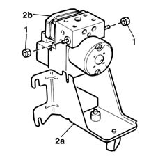

3340A13 abs central mount - r r
- Path
- Procedures > 33 BRAKING SYSTEM > 3340 A(B.S. ANTI-LOCK BRAKING SYSTEM .) > 3340A abs check/adjustment devices > 3340A13 abs central mount - r r
- Kind
- repair procedure (removal / refitting; the operation number is the code)
- Applies to
- all engines; all production periods
- Interactive page
- https://sloeber94.github.io/elrnDB-fMltpl/en/#/2891644
Applies to: all engines; all production periods
 Removing
Removing
 Refitting
Refitting1048A10 AIR CLEANER FILTERING ELEMENT - REPLACE
5530B52 Battery DRIP TRAY/SUPPORT - R.R.
3340A12 A'B.S. system. - electronic and hydraulic CONTROL UNIT R.R.
1. Loosen the nuts securing the hydraulic and electronic control unit to the mount.
2. Separate mount (2a) from ABS hydraulic and electronic control unit (2b).

Applies to: all engines; all production periods
Refitting
RemovingFit the hydraulic and electronic control unit to the mount.
Tighten the retaining nuts to torque.
 | Fastening | Component | Ø | Value (daNm) |
|---|---|---|---|---|
- | Bolt | HYDRAULIC AND ELECTRONIC CONTROL UNIT | M6 | 2.4 |
3340A12 A'B.S. system. - electronic and hydraulic CONTROL UNIT R.R.
3330A10 BRAKE FLUID - Check level and top up, if necessary.
3330A14 HYDRAULIC BRAKING SYSTEM - Bleed air